Who I Am
Hi:) My name is Paul Jackino. I'm passionate about living life fully, making meaningful connections, and becoming the best version of myself. Life is about writing a compelling story--one filled with challenges, triumphs, adventures, and deep connections with others and the world around us.
I thrive in international and diverse environments, embracing different cultures and perspectives. The Swedish concept of 'lagom'--finding balance and moderation--deeply resonates with me, shaping how I approach both work and life. My passion for problem-solving, creativity, and personal growth drives me to seek out new opportunities and experiences that challenge and inspire me.
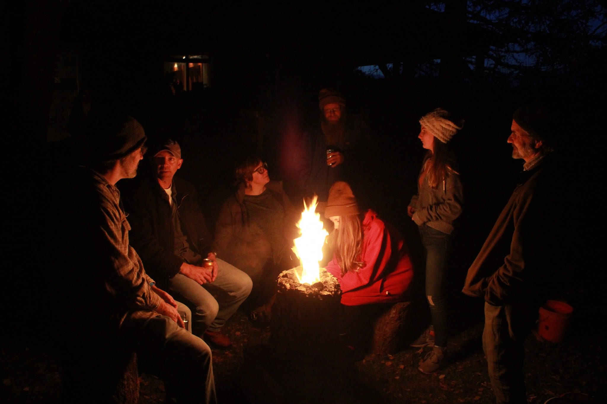My Journey
My path has been anything but ordinary. It began with a love for DJing and radio as a young boy, pretending to host radio shows in my bedroom. By age 13, I hosted a radio show at my local college station, which sparked a lifelong passion for creative expression and communication.
That passion grew into a career in radio, audio production, and eventually music composition. After graduating with a Bachelor of Science in Communication from State University of New York at Fredonia, I pursued opportunities across the country, from Phoenix, Arizona, to my hometown in New York. Along the way, I explored diverse fields, including organic farming, carpentry, manufacturing, and IT. Each experience shaped me, teaching me the value of perseverance, collaboration, and community.
Most notably, my entrepreneurial spirit led me to create Paul's Rocket Stoves, a venture dedicated to facilitating engagement with contained fire that inspires primal connection with nature and community. This business embodies my mission to bring people closer to nature and each other.
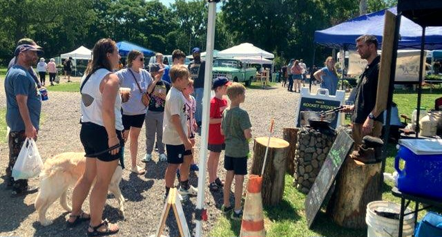What Drives Me
I believe in a future where technology enhances our human experiences rather than replaces them. I am driven by a deep desire to grow as a person, live with integrity, and inspire others to connect meaningfully with the world around them. Whether through my work in IT, creative projects, or community initiatives, I always aim to bring energy, enthusiasm, and a solutions-focused mindset to everything I do.
I take pride in adapting to new environments and working with people from diverse backgrounds. I bring passion, problem-solving, and a commitment to continuous learning to every opportunity, always looking forward to the next great adventure.
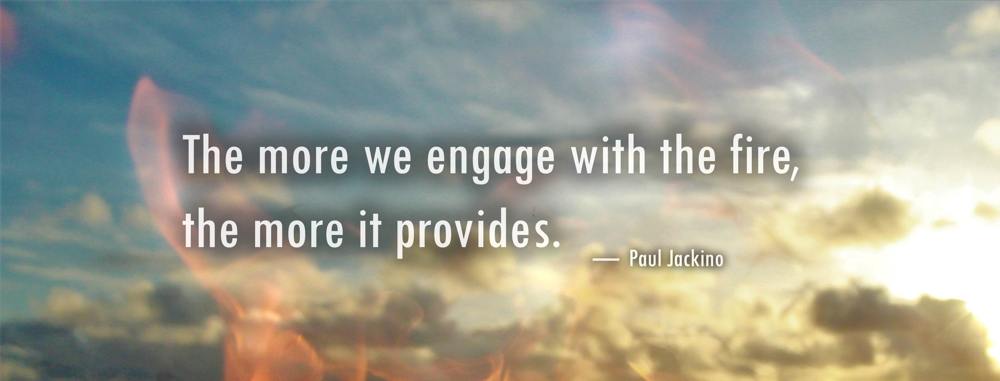Fun Facts & Personal Interests
I love deep-woods tent camping - sometimes with friends, but often solo. Finding my own firewood, starting a fire from a spark, and sleeping out there in the cold gives me a sense of peace and independence.
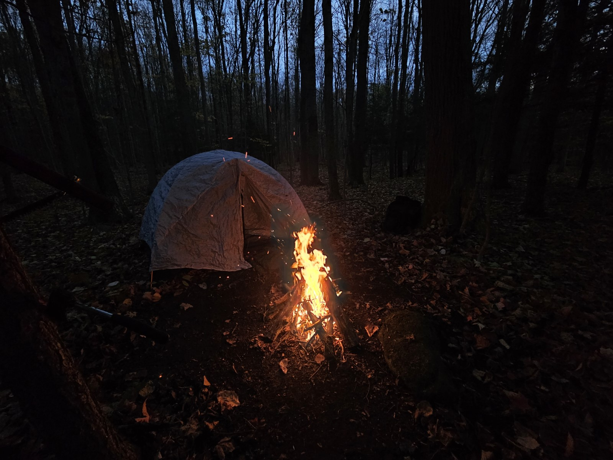Early morning on Bear Lake in Chautauqua County, quietly paddling out to fish for crappie. This photo was taken by my friend Dan as the fog lifted off the water. Between the two of us, we caught a solid number that day, but more than that, it was one of those simple, memorable mornings—calm water, good company, and the kind of stillness you only find out on a lake.
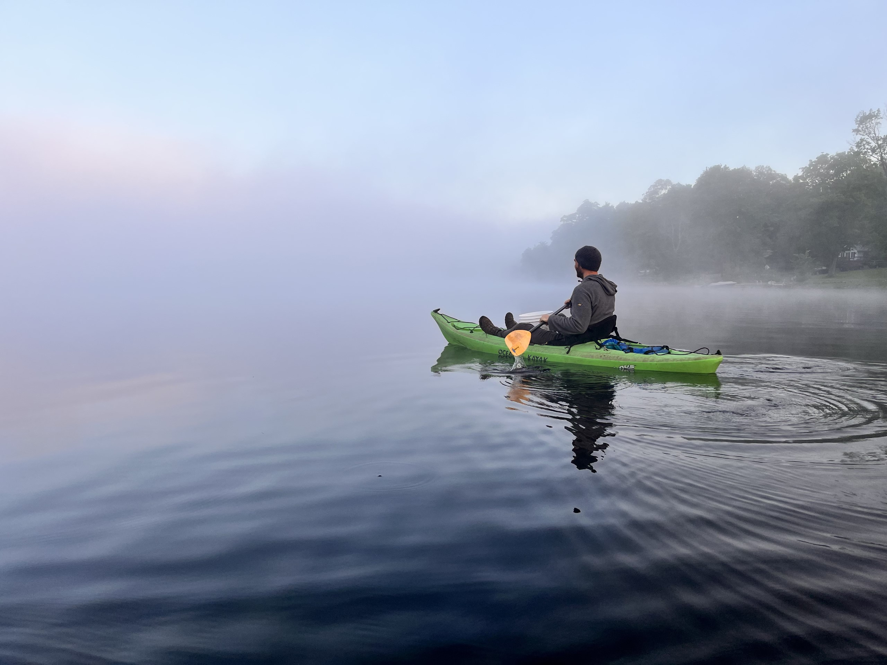- Hobby: I enjoy composing music, exploring new places, and experimenting with creative projects. I have a deep appreciation for cultural traditions and finding balance in life, which aligns with my love for exploring new perspectives and ways of thinking. I also have a deep appreciation for fika, the Swedish tradition of taking a break to connect with people over coffee and good conversation.
- Favorite Skill: I’m a master at starting a bonfire--whether with modern tools or a bow drill for a true survivalist touch.
- Global Mindset: I am always seeking out cross-cultural collaborations and opportunities to work with forward-thinking individuals worldwide.
Family
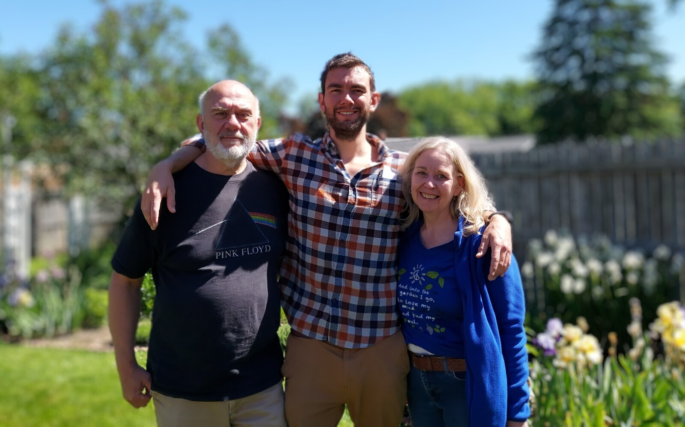A moment with my parents, who have shaped so much of who I am. Their support, strength, and love have been a grounding force throughout my life.
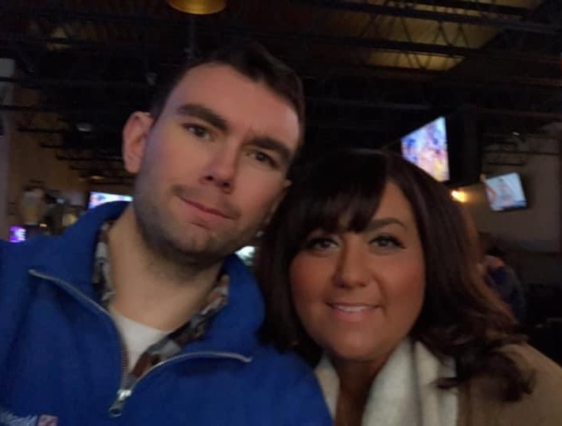A moment with my sister, who has helped shape so much of who I am. Her support, strength, and love has been a grounding force throughout my life.
My Close Friends
These are some of the people who have been an important part of my life and journey. Each moment captured here reflects friendship, shared adventures, and deep connections.
 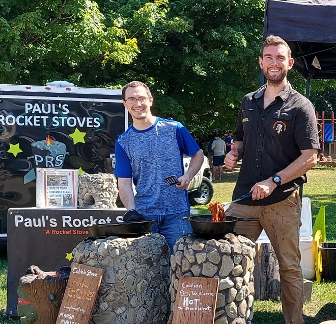
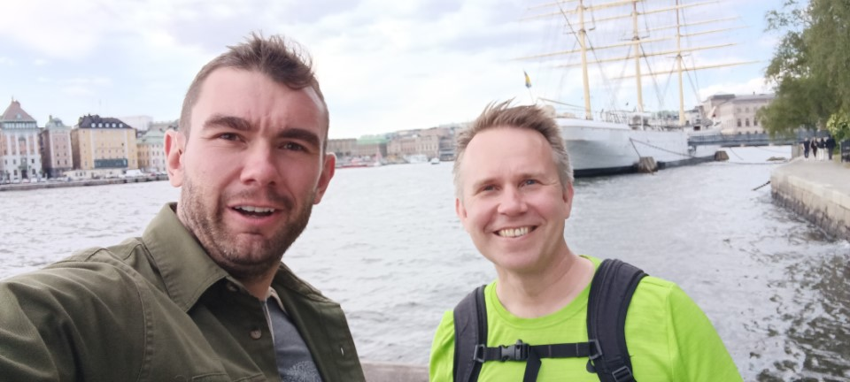
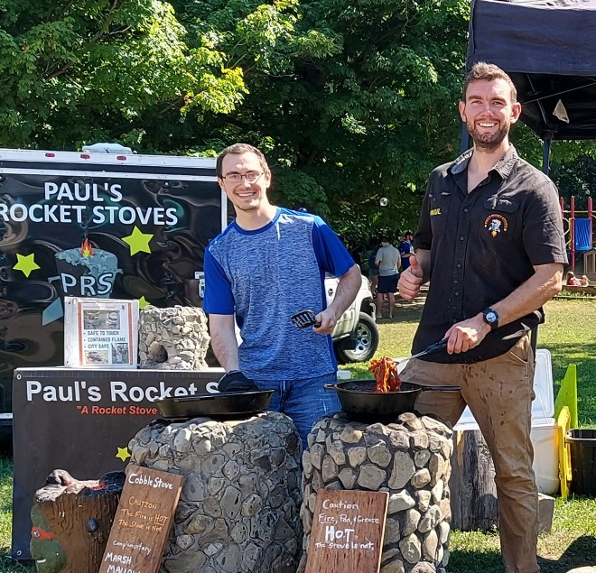
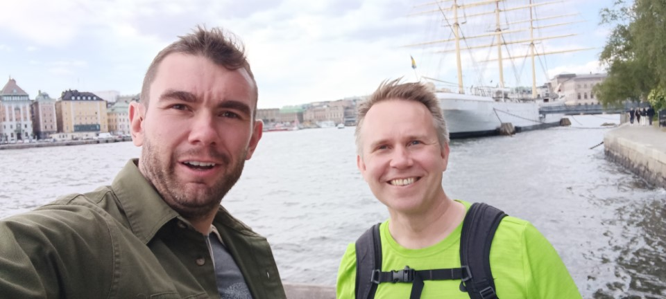